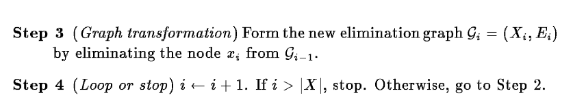
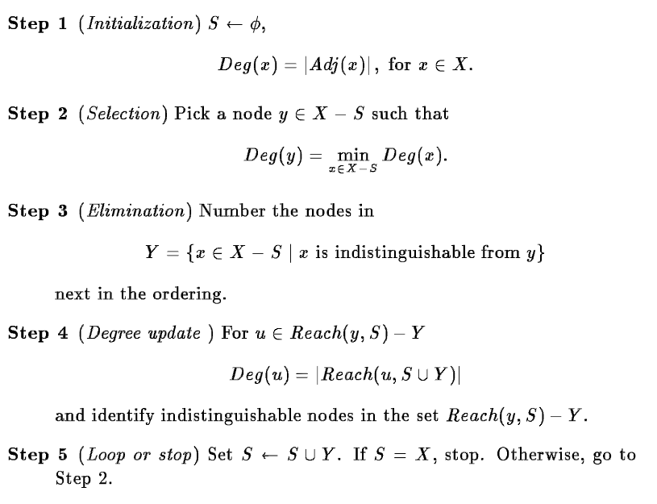

<!DOCTYPE html>


<html lang="zh-CN">


<head>
  <meta name="baidu-site-verification" content="codeva-jGgDUtkIYa" />
  <meta charset="utf-8" />
    
  <meta name="viewport" content="width=device-width, initial-scale=1, maximum-scale=1" />
  <title>
    稀疏矩阵算法最小度数算法三之最小度数算法理论 |  VincereZhou&#39;s blog
  </title>
  <meta name="generator" content="hexo-theme-ayer">
  
  <link rel="shortcut icon" href="/images/mojie.jpg" />
  
  
<link rel="stylesheet" href="/dist/main.css">

  <link rel="stylesheet" href="https://cdn.jsdelivr.net/gh/Shen-Yu/cdn/css/remixicon.min.css">
  
<link rel="stylesheet" href="/css/custom.css">

  
  <script src="https://cdn.jsdelivr.net/npm/pace-js@1.0.2/pace.min.js"></script>
  
  

  

<link rel="alternate" href="/atom.xml" title="VincereZhou's blog" type="application/atom+xml">
</head>

</html>

<body>
  <div id="app">
    
      
    <main class="content on">
      <section class="outer">
  <article
  id="post-稀疏矩阵算法最小度数算法三之最小度数算法理论"
  class="article article-type-post"
  itemscope
  itemprop="blogPost"
  data-scroll-reveal
>
  <div class="article-inner">
    
    <header class="article-header">
       
<h1 class="article-title sea-center" style="border-left:0" itemprop="name">
  稀疏矩阵算法最小度数算法三之最小度数算法理论
</h1>
 

    </header>
     
    <div class="article-meta">
      <a href="/posts/ff1d909d/" class="article-date">
  <time datetime="2022-09-25T08:45:52.000Z" itemprop="datePublished">2022-09-25</time>
</a> 
  <div class="article-category">
    <a class="article-category-link" href="/categories/%E7%90%86%E8%AE%BA%E5%AD%A6%E4%B9%A0/">理论学习</a> / <a class="article-category-link" href="/categories/%E7%90%86%E8%AE%BA%E5%AD%A6%E4%B9%A0/%E7%A8%80%E7%96%8F%E7%9F%A9%E9%98%B5/">稀疏矩阵</a>
  </div>
  
<div class="word_count">
    <span class="post-time">
        <span class="post-meta-item-icon">
            <i class="ri-quill-pen-line"></i>
            <span class="post-meta-item-text"> 字数统计:</span>
            <span class="post-count">2.4k</span>
        </span>
    </span>

    <span class="post-time">
        &nbsp; | &nbsp;
        <span class="post-meta-item-icon">
            <i class="ri-book-open-line"></i>
            <span class="post-meta-item-text"> 阅读时长≈</span>
            <span class="post-count">8 分钟</span>
        </span>
    </span>
</div>
 
    </div>
      
    <div class="tocbot"></div>


  
    <div class="article-entry" itemprop="articleBody">
       
  <link rel="stylesheet" type="text/css" href="https://cdn.jsdelivr.net/hint.css/2.4.1/hint.min.css"><p>本章节介绍 <em>the minimum degree algorithm</em> ，我个人将其翻译为最小度数算法。这里我们看最小度数算法的理论部分。</p>
<span id="more"></span>
<h1>The Minimum Degree</h1>
<p>虽然  和  的非零元素结构不同，但是其非零元素数目相同，即  。然而对于某些  ， 和  可能有很大的差别。</p>
<p>我们希望找到一个置换矩阵   ，能够最大限度地减少 <em>fill-in</em> ，即</p>
<p style=""></p><p>然而至今为止，我们没有一个有效的算法可以得到这个最佳的   。实际上这个问题是一个 <em>NP-complete problem</em> (Yannakakis[56]) 。因此我们不得不采用一些启发式的算法来得到一个可以接受的  。</p>
<p>到目前位置，最流行的算法就是<strong>最小度数算法</strong> (<em>the minimum degree algorithm</em>) (Tinney [53]) 。假设  已经打上了标签，此时这些列在 <em>filled graph</em> 中的非零元素数目已经确定了。为了减少第  列中的非零元素数目，很明显在剩下的需要分解的子矩阵中，拥有最少的非零元素的列应该选为列  。</p>
<h2 id="The-Basic-Algorithm">The Basic Algorithm</h2>
<p><em>the minimum degree algorithm</em> 可以简单地描述为对一个图节点地排序。设  是一个没有排序的图，采用 <em>elimination graph model</em> ，基本算法如下</p>
<p></p>
<p></p>
<p>举个例子，下图是我们考虑的图</p>
<p></p>
<p>最小度数算法的执行过程如下图。注意在某一步中可能存在多个度数最小的节点，这里我们是随机选择了一个。然而在不同的版本中，这个节点的选择可能有着不同的方法。</p>
<p></p>
<h2 id="Description-of-the-Minimum-Degree-Algorithm-Using-Reachable-Sets">Description of the Minimum Degree Algorithm Using Reachable Sets</h2>
<p>在最小度数算法中，每一步均包含了图的转换，这是这个算法实施起来最费时的步骤。如果我们可以提供一种替代方法来计算 <em>elimination graph</em> 中节点的度数，我们就可以跳过这些图的转换过程。</p>
<p>定理 5.2.3 可以通过利用 <em>reachable sets</em> 来实现这一点，因此我们可以对算法做一些修改如下：</p>
<p></p>
<p>此时在整个过程中我们均只采用原始的图结构。实际上，这个算法可以只通过相邻结构    得到实现。</p>
<p>需要指出的是，在 <em>Degree update</em> 这一步中，我们没有必要对每一个  中的节点均计算度数，因为其中的绝大部分均会保持不变，存在引理如下</p>
<p><strong>引理 5.4.1</strong>：设 $y \notin S $ ，，那么</p>
<p style=""></p><p> 说明在剔除  的消元图中，  和  是相邻的，此时剔除  ， 的度数可能会发生改变，反之  的度数不会发生改变。也就是说，<strong>剔除  只有在消元图中  的相邻位点的度数会发生改变</strong>。</p>
<p>在图 5.4.3 中，考虑节点  被消除的步骤中，此时  ，因此  ，因此消除  影响节点  和  的度数。</p>
<p>因此上面算法的步骤 3 可以重新表达为</p>
<p></p>
<p><strong>推论 5.4.2</strong>：对于  ，均有</p>
<p style=""></p><p>根据引理 5.4.1 ，对于  ，自然成立。否则，在剔除  的消元图中，  和  是相邻的。剔除节点  ，首先剔除了  这条边，然后  的相邻节点互相连接，因此  至少为 。</p>
<h2 id="An-Enhancement">An Enhancement</h2>
<p>上面提到的算法每次循环只会对一个节点进行编号，但是当我们在步骤 2 中找到了一个度数最小的节点  ，我们通常可能会发现可能是下一个节点的候选节点集合。当我们考虑一次消元的过程，其中  是已经消除的节点的集合，如果满足下式，那么节点  称为<strong>不可区分的</strong> (<em>indistinguishable with respect to elimination</em>) 。</p>
<p style=""></p><p>以下图为例，子集  包含 36 个阴影的节点。我们注意到此时  是不可区分的，因为 ，， 是一样的，均为</p>
<p style=""></p><p></p>
<p>还有两组节点是不可区分的，分别为  和  。</p>
<p>不可区分的节点可以加速最小度数算法。</p>
<p><strong>定理 5.4.3</strong>：设  ，如果</p>
<p style=""></p><p>那么对于所有的  ，存在</p>
<p style=""></p><p>首先我们想要证明 。 因为  ，所以  ，而 ，因此  。由于 ，而  中不包含 ，因此我们得到  。</p>
<p>其次我们想要证明  。考虑  ，肯定存在一条路径 ，其中  。如果所有  ，由于  ，那么要么  ，自然成立；要么  ，由于  ，因此同样有  。如果不是所有  ，设  是   中第一个不在  中的节点，即</p>
<p style=""></p><p>这说明  ，也就是说，  也可以通过  中的节点连接到 , 进而进一步通过  连接到  , 因此有  。得证   。</p>
<p>联合起来，因此我们得到：</p>
<p style=""></p><p>我们可以从反方向证明得到  ，因此我们得证  。</p>
<p><strong>推论 5.4.4</strong>：设  相对于  不可区分，那么对于  ，存在</p>
<p style=""></p><p>换句话说，如果在消元的某一步中，如果两个节点不可区分，那么除非其中一个节点被消除，不然它们会一直保持不可区分的状态。进一步地说，这些不可区分的节点可以<strong>同时消除</strong>。</p>
<p><strong>定理 5.4.5</strong>：如果两个节点在最小度数算法中的某一步中不可区分，那么它们可以在算法中同时被消除。</p>
<p>证明：设  相对于  不可区分，假设在集合  已经被消除之后， 变成了度数最小的一个节点，即</p>
<p style=""></p><p>那么我们得到</p>
<p style=""></p><p>因此，对于所有的  ，通过推论 5.4.2 ，存在</p>
<p style=""></p><p>换句话说，当消除了  之后，节点  就会变成度数最小的节点。</p>
<p>因此不可区分的节点可以聚集在一块，视为一个 <em><strong>supernode</strong></em> 。举个例子，下图展示了两步中不可区分的节点形成 supernode 的过程，当 {a,b,c} 被消元之后，剩下的所有节点均有相同的 <em>reachable sets</em> ，因此均可以聚集成一个节点。</p>
<p></p>
<p>一般来说，我们不会试图找出所有可能的不可区分的节点，我们会查找一个简单但是证明非常有效的条件，在绝大多数情况下，这个条件会找出所有不可区分的节点。</p>
<p>设  ， 是已经消元的节点，设  和   是子图   的两个连通组分，即</p>
<p style=""></p><p><strong>引理 5.4.6</strong>：设  ，  。如果  ，并且  ，那么存在</p>
<p style=""></p><p>证明：如果  。假设  ，因为   是   的 一个连通组分，同样  ，即  均是  的相邻节点， 因此我们可以通过   找到一条从  到  的路径，因此  ；同样地，假设  ，同理可证   。因此可得  。</p>
<p>反过来，如果  ，那么肯定存在一条路径  。如果  ，那么  。 如果 ， 。如果  ，由于  是 S 中的一个连通组分，这说明  是  的子集，否则  ，则   是  的子集。因此  ，因此  ，因此我们证明  。</p>
<p><strong>定理 5.4.7</strong>：在下面的集合中的节点相对于  是不可区分的。</p>
<p style=""></p><p><strong>推论 5.4.8</strong>： 对于  ，存在</p>
<p style=""></p><p>更新后的最小度数算法如下：</p>
<p></p>
<h2 id="思考题">思考题</h2>
<ol>
<li>
<p>设  是从最小度数算法中消元图  中选中的度数最小的节点，设  ，并且满足</p>
<p style=""></p><p>尝试证明 y 是  中度数最小的一个节点。</p>
<p><strong>证明</strong>： 我们把  中的节点分为两类，第一类是  ，第二类是其他节点。根据之前的推导，第二类的节点从    到   的过程中度数不变，因此对于其中任意一个节点  ，均满足  ，因此这些节点在   中的自由度均大于  。</p>
<p>我们再看第一类节点，我们看在什么情况下  才能满足上面的条件，首先从    到   的过程中，  的度数先减去 1（消除 ），再加上 n (新增的 <code>fill-in</code> ) ，因此我们有  ，因此   是第一类节点在    中可能取到的最小度数。</p>
<p>结合这两点，我们得证  y 是  中度数最小的一个节点。</p>
</li>
<li>
<p>设  是从最小度数算法中消元图  中选中的度数最小的节点，设  ，并且满足</p>
<p style=""></p><p><strong>证明</strong>：这里我们证明这个条件和第一题的条件是等价的。首先我们证明如果满足第一题中的条件，那么同样满足第二题的条件。第一题中我们证明得到   。由于首尾相等，因此其中的两个不等式均为等式。因此我们得到  和  ，也就是说在   中  也是度数最小的节点，并且消除 x 之后  y 没有新增的  <code>fill-in</code> 。没有新增的 <code>fill-in</code> 说明  中  除  之外的相邻节点均与  相邻，设  在   的相邻节点数为  ，其 除  之外的相邻节点数为  ，这  个节点也是  的相邻节点。由于  ，因此  在   的相邻节点数也为 ，除了上面的  个节点就还有节点  ，正好是  个节点，因此说明 <strong> 和  是不可区分的</strong>，因此满足 。</p>
<p>反过来，如果 ，实际这个条件为  ，需要减去其自身。因此  ，由于  在  中度数最小，因此我们得到     ，这说明  ，因此说明  <strong> 和  是不可区分的</strong>，易得  ，得证。</p>
</li>
</ol>
<p>总结一下，对于  中的节点，其在  中可能取到的度数的最小值为   ；对于其它节点，其在  中可能取到的度数的最小值为   。因此，在查找   中度数最小的节点时，可以先遍历   中的节点，只要存在度数小于等于   的节点，就可以在  中找到度数最小的节点，即下一次消元的节点。</p>
<h1>参考文献</h1>
<ol>
<li>George A, Liu J, Ng E. Computer solution of sparse linear systems[J]. Oak Ridge National Laboratory, 1994.</li>
</ol>
 
      <!-- reward -->
      
    </div>
    

    <!-- copyright -->
    
    <div class="declare">
      <ul class="post-copyright">
        <li>
          <i class="ri-copyright-line"></i>
          <strong>版权声明： </strong>
          
          本博客所有文章除特别声明外，著作权归作者所有。转载请注明出处！
          
        </li>
      </ul>
    </div>
    
    <footer class="article-footer">
       
  <ul class="article-tag-list" itemprop="keywords"><li class="article-tag-list-item"><a class="article-tag-list-link" href="/tags/%E7%90%86%E8%AE%BA%E5%AD%A6%E4%B9%A0/" rel="tag">理论学习</a></li><li class="article-tag-list-item"><a class="article-tag-list-link" href="/tags/%E7%A8%80%E7%96%8F%E7%9F%A9%E9%98%B5/" rel="tag">稀疏矩阵</a></li></ul>

    </footer>
  </div>

   
  <nav class="article-nav">
    
      <a href="/posts/e0c9e6c/" class="article-nav-link">
        <strong class="article-nav-caption">上一篇</strong>
        <div class="article-nav-title">
          
            稀疏矩阵算法最小度数算法四之最小度数算法主程序
          
        </div>
      </a>
    
    
      <a href="/posts/aef04e13/" class="article-nav-link">
        <strong class="article-nav-caption">下一篇</strong>
        <div class="article-nav-title">稀疏矩阵算法最小度数算法二之商图</div>
      </a>
    
  </nav>

   
<!-- valine评论 -->
<div id="vcomments-box">
  <div id="vcomments"></div>
</div>
<script src="//cdn1.lncld.net/static/js/3.0.4/av-min.js"></script>
<script src="https://cdn.jsdelivr.net/npm/valine@1.4.14/dist/Valine.min.js"></script>
<script>
  new Valine({
    el: "#vcomments",
    app_id: "yHN3kf7fHt5wvleM2DVoHLdY-gzGzoHsz",
    app_key: "RPIwmdftljIzOtAULwc7JCAp",
    path: window.location.pathname,
    avatar: "monsterid",
    placeholder: "靓仔，看完留个评论再走哇！\n只需要填入昵称和邮箱就可以了",
    recordIP: true,
  });
  const infoEle = document.querySelector("#vcomments .info");
  if (infoEle && infoEle.childNodes && infoEle.childNodes.length > 0) {
    infoEle.childNodes.forEach(function (item) {
      item.parentNode.removeChild(item);
    });
  }
</script>
<style>
  #vcomments-box {
    padding: 5px 30px;
  }

  @media screen and (max-width: 800px) {
    #vcomments-box {
      padding: 5px 0px;
    }
  }

  #vcomments-box #vcomments {
    background-color: #fff;
  }

  .v .vlist .vcard .vh {
    padding-right: 20px;
  }

  .v .vlist .vcard {
    padding-left: 10px;
  }
</style>

 
   
     
</article>

</section>
      <footer class="footer">
  <div class="outer">
    <ul>
      <li>
        Copyrights &copy;
        2019-2023
        <i class="ri-heart-fill heart_icon"></i> Vincere Zhou
      </li>
    </ul>
    <ul>
      <li>
        
        
        <span>
  <span><i class="ri-user-3-fill"></i>访问人数:<span id="busuanzi_value_site_uv"></span></s>
  <span class="division">|</span>
  <span><i class="ri-eye-fill"></i>浏览次数:<span id="busuanzi_value_page_pv"></span></span>
</span>
        
      </li>
    </ul>
    <ul>
      
    </ul>
    <ul>
      
    </ul>
    <ul>
      <li>
        <!-- cnzz统计 -->
        
      </li>
    </ul>

    <!-- 与只只在一起天数 -->
	<ul>
		<li><span id="lovetime_span"></span></li>
	</ul>
    <script type="text/javascript">			
        function show_runtime() {
            window.setTimeout("show_runtime()", 1000);
            X = new Date("03/04/2021 22:11:00");
            Y = new Date();
            T = (Y.getTime() - X.getTime());
            M = 24 * 60 * 60 * 1000;
            a = T / M;
            A = Math.floor(a);
            b = (a - A) * 24;
            B = Math.floor(b);
            c = (b - B) * 60;
            C = Math.floor((b - B) * 60);
            D = Math.floor((c - C) * 60);
            lovetime_span.innerHTML = "只只和男朋友在一起了 " + A + "天" + B + "小时" + C + "分" + D + "秒"
        }
        show_runtime();
    </script>

  </div>
</footer>
      <div class="float_btns">
        <div class="totop" id="totop">
  <i class="ri-arrow-up-line"></i>
</div>

      </div>
    </main>
    <aside class="sidebar on">
      <button class="navbar-toggle"></button>
<nav class="navbar">
  
  <div class="logo">
    <a href="/"></a>
  </div>
  
  <ul class="nav nav-main">
    
    <li class="nav-item">
      <a class="nav-item-link" href="/">主页</a>
    </li>
    
    <li class="nav-item">
      <a class="nav-item-link" href="/archives">归档</a>
    </li>
    
    <li class="nav-item">
      <a class="nav-item-link" href="/categories">分类</a>
    </li>
    
    <li class="nav-item">
      <a class="nav-item-link" href="/tags">标签</a>
    </li>
    
    <li class="nav-item">
      <a class="nav-item-link" href="/friends">友链</a>
    </li>
    
    <li class="nav-item">
      <a class="nav-item-link" href="/about">关于</a>
    </li>
    
  </ul>
</nav>
<nav class="navbar navbar-bottom">
  <ul class="nav">
    <li class="nav-item">
      
      <a class="nav-item-link nav-item-search"  title="搜索">
        <i class="ri-search-line"></i>
      </a>
      
      
      <a class="nav-item-link" target="_blank" href="/atom.xml" title="RSS Feed">
        <i class="ri-rss-line"></i>
      </a>
      
    </li>
  </ul>
</nav>
<div class="search-form-wrap">
  <div class="local-search local-search-plugin">
  <input type="search" id="local-search-input" class="local-search-input" placeholder="Search...">
  <div id="local-search-result" class="local-search-result"></div>
</div>
</div>
    </aside>
    <script>
      if (window.matchMedia("(max-width: 768px)").matches) {
        document.querySelector('.content').classList.remove('on');
        document.querySelector('.sidebar').classList.remove('on');
      }
    </script>
    <div id="mask"></div>

<!-- #reward -->
<div id="reward">
  <span class="close"><i class="ri-close-line"></i></span>
  <p class="reward-p"><i class="ri-cup-line"></i>请我喝杯茶吧~</p>
  <div class="reward-box">
    
    <div class="reward-item">
      
      <span class="reward-type">支付宝</span>
    </div>
    
    
    <div class="reward-item">
      
      <span class="reward-type">微信</span>
    </div>
    
  </div>
</div>
    
<script src="/js/jquery-2.0.3.min.js"></script>


<script src="/js/lazyload.min.js"></script>

<!-- Tocbot -->


<script src="/js/tocbot.min.js"></script>

<script>
  tocbot.init({
    tocSelector: '.tocbot',
    contentSelector: '.article-entry',
    headingSelector: 'h1, h2, h3, h4, h5, h6',
    hasInnerContainers: true,
    scrollSmooth: true,
    scrollContainer: 'main',
    positionFixedSelector: '.tocbot',
    positionFixedClass: 'is-position-fixed',
    fixedSidebarOffset: 'auto'
  });
</script>

<script src="https://cdn.jsdelivr.net/npm/jquery-modal@0.9.2/jquery.modal.min.js"></script>
<link rel="stylesheet" href="https://cdn.jsdelivr.net/npm/jquery-modal@0.9.2/jquery.modal.min.css">
<script src="https://cdn.jsdelivr.net/npm/justifiedGallery@3.7.0/dist/js/jquery.justifiedGallery.min.js"></script>

<script src="/dist/main.js"></script>

<!-- ImageViewer -->

<!-- Root element of PhotoSwipe. Must have class pswp. -->
<div class="pswp" tabindex="-1" role="dialog" aria-hidden="true">

    <!-- Background of PhotoSwipe. 
         It's a separate element as animating opacity is faster than rgba(). -->
    <div class="pswp__bg"></div>

    <!-- Slides wrapper with overflow:hidden. -->
    <div class="pswp__scroll-wrap">

        <!-- Container that holds slides. 
            PhotoSwipe keeps only 3 of them in the DOM to save memory.
            Don't modify these 3 pswp__item elements, data is added later on. -->
        <div class="pswp__container">
            <div class="pswp__item"></div>
            <div class="pswp__item"></div>
            <div class="pswp__item"></div>
        </div>

        <!-- Default (PhotoSwipeUI_Default) interface on top of sliding area. Can be changed. -->
        <div class="pswp__ui pswp__ui--hidden">

            <div class="pswp__top-bar">

                <!--  Controls are self-explanatory. Order can be changed. -->

                <div class="pswp__counter"></div>

                <button class="pswp__button pswp__button--close" title="Close (Esc)"></button>

                <button class="pswp__button pswp__button--share" style="display:none" title="Share"></button>

                <button class="pswp__button pswp__button--fs" title="Toggle fullscreen"></button>

                <button class="pswp__button pswp__button--zoom" title="Zoom in/out"></button>

                <!-- Preloader demo http://codepen.io/dimsemenov/pen/yyBWoR -->
                <!-- element will get class pswp__preloader--active when preloader is running -->
                <div class="pswp__preloader">
                    <div class="pswp__preloader__icn">
                        <div class="pswp__preloader__cut">
                            <div class="pswp__preloader__donut"></div>
                        </div>
                    </div>
                </div>
            </div>

            <div class="pswp__share-modal pswp__share-modal--hidden pswp__single-tap">
                <div class="pswp__share-tooltip"></div>
            </div>

            <button class="pswp__button pswp__button--arrow--left" title="Previous (arrow left)">
            </button>

            <button class="pswp__button pswp__button--arrow--right" title="Next (arrow right)">
            </button>

            <div class="pswp__caption">
                <div class="pswp__caption__center"></div>
            </div>

        </div>

    </div>

</div>

<link rel="stylesheet" href="https://cdn.jsdelivr.net/npm/photoswipe@4.1.3/dist/photoswipe.min.css">
<link rel="stylesheet" href="https://cdn.jsdelivr.net/npm/photoswipe@4.1.3/dist/default-skin/default-skin.min.css">
<script src="https://cdn.jsdelivr.net/npm/photoswipe@4.1.3/dist/photoswipe.min.js"></script>
<script src="https://cdn.jsdelivr.net/npm/photoswipe@4.1.3/dist/photoswipe-ui-default.min.js"></script>

<script>
    function viewer_init() {
        let pswpElement = document.querySelectorAll('.pswp')[0];
        let $imgArr = document.querySelectorAll(('.article-entry img:not(.reward-img)'))

        $imgArr.forEach(($em, i) => {
            $em.onclick = () => {
                // slider展开状态
                // todo: 这样不好，后面改成状态
                if (document.querySelector('.left-col.show')) return
                let items = []
                $imgArr.forEach(($em2, i2) => {
                    let img = $em2.getAttribute('data-idx', i2)
                    let src = $em2.getAttribute('data-target') || $em2.getAttribute('src')
                    let title = $em2.getAttribute('alt')
                    // 获得原图尺寸
                    const image = new Image()
                    image.src = src
                    items.push({
                        src: src,
                        w: image.width || $em2.width,
                        h: image.height || $em2.height,
                        title: title
                    })
                })
                var gallery = new PhotoSwipe(pswpElement, PhotoSwipeUI_Default, items, {
                    index: parseInt(i)
                });
                gallery.init()
            }
        })
    }
    viewer_init()
</script>

<!-- MathJax -->

<script type="text/x-mathjax-config">
  MathJax.Hub.Config({
      tex2jax: {
          inlineMath: [ ['$','$'], ["\\(","\\)"]  ],
          processEscapes: true,
          skipTags: ['script', 'noscript', 'style', 'textarea', 'pre', 'code']
      }
  });

  MathJax.Hub.Queue(function() {
      var all = MathJax.Hub.getAllJax(), i;
      for(i=0; i < all.length; i += 1) {
          all[i].SourceElement().parentNode.className += ' has-jax';
      }
  });
</script>

<script src="https://cdn.jsdelivr.net/npm/mathjax@2.7.6/unpacked/MathJax.js?config=TeX-AMS-MML_HTMLorMML"></script>
<script>
  var ayerConfig = {
    mathjax: true
  }
</script>

<!-- Katex -->

<!-- busuanzi  -->


<script src="/js/busuanzi-2.3.pure.min.js"></script>


<!-- ClickLove -->

<!-- ClickBoom1 -->

<!-- ClickBoom2 -->

<!-- CodeCopy -->


<link rel="stylesheet" href="/css/clipboard.css">

<script src="https://cdn.jsdelivr.net/npm/clipboard@2/dist/clipboard.min.js"></script>
<script>
  function wait(callback, seconds) {
    var timelag = null;
    timelag = window.setTimeout(callback, seconds);
  }
  !function (e, t, a) {
    var initCopyCode = function(){
      var copyHtml = '';
      copyHtml += '<button class="btn-copy" data-clipboard-snippet="">';
      copyHtml += '<i class="ri-file-copy-2-line"></i><span>COPY</span>';
      copyHtml += '</button>';
      $(".highlight .code pre").before(copyHtml);
      $(".article pre code").before(copyHtml);
      var clipboard = new ClipboardJS('.btn-copy', {
        target: function(trigger) {
          return trigger.nextElementSibling;
        }
      });
      clipboard.on('success', function(e) {
        let $btn = $(e.trigger);
        $btn.addClass('copied');
        let $icon = $($btn.find('i'));
        $icon.removeClass('ri-file-copy-2-line');
        $icon.addClass('ri-checkbox-circle-line');
        let $span = $($btn.find('span'));
        $span[0].innerText = 'COPIED';
        
        wait(function () { // 等待两秒钟后恢复
          $icon.removeClass('ri-checkbox-circle-line');
          $icon.addClass('ri-file-copy-2-line');
          $span[0].innerText = 'COPY';
        }, 2000);
      });
      clipboard.on('error', function(e) {
        e.clearSelection();
        let $btn = $(e.trigger);
        $btn.addClass('copy-failed');
        let $icon = $($btn.find('i'));
        $icon.removeClass('ri-file-copy-2-line');
        $icon.addClass('ri-time-line');
        let $span = $($btn.find('span'));
        $span[0].innerText = 'COPY FAILED';
        
        wait(function () { // 等待两秒钟后恢复
          $icon.removeClass('ri-time-line');
          $icon.addClass('ri-file-copy-2-line');
          $span[0].innerText = 'COPY';
        }, 2000);
      });
    }
    initCopyCode();
  }(window, document);
</script>


<!-- CanvasBackground -->


    
  </div>
<script src="/live2dw/lib/L2Dwidget.min.js?094cbace49a39548bed64abff5988b05"></script><script>L2Dwidget.init({"pluginRootPath":"live2dw/","pluginJsPath":"lib/","pluginModelPath":"assets/","tagMode":false,"debug":false,"model":{"jsonPath":"live2d-widget-model-wanko"},"display":{"position":"left","width":150,"height":300,"hOffset":80,"vOffset":-70},"mobile":{"show":false,"scale":0.5},"log":false});</script></body>

</html>